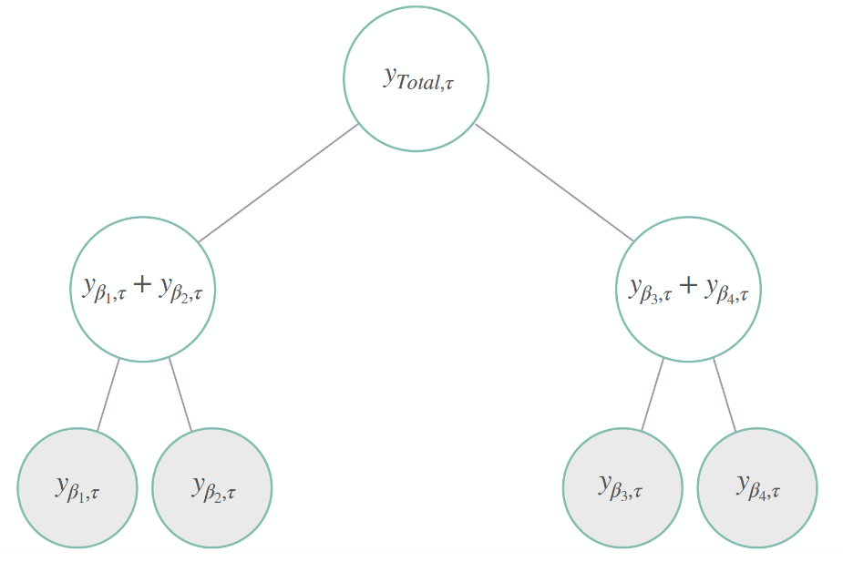
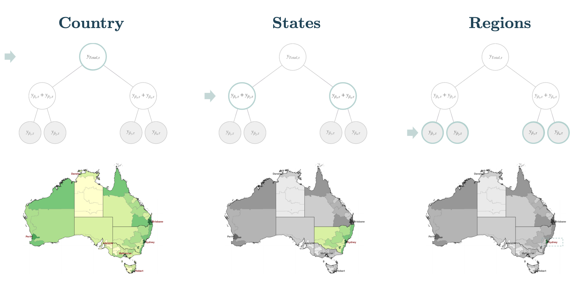

!pip install hierarchicalforecast
!pip install -U numba statsforecast datasetsforecastIntroduction
Introduction to Hierarchial Forecasting using
HierarchialForecast
You can run these experiments using CPU or GPU with Google Colab.

1. Hierarchical Series
In many applications, a set of time series is hierarchically organized. Examples include the presence of geographic levels, products, or categories that define different types of aggregations.
In such scenarios, forecasters are often required to provide predictions for all disaggregate and aggregate series. A natural desire is for those predictions to be “coherent”, that is, for the bottom series to add up precisely to the forecasts of the aggregated series.

Figure 1. shows a simple hierarchical structure where we have four bottom-level series, two middle-level series, and the top level representing the total aggregation. Its hierarchical aggregations or coherency constraints are:
\[\begin{align} y_{\mathrm{Total},\tau} = y_{\beta_{1},\tau}+y_{\beta_{2},\tau}+y_{\beta_{3},\tau}+y_{\beta_{4},\tau} \qquad \qquad \qquad \qquad \qquad \\ \mathbf{y}_{[a],\tau}=\left[y_{\mathrm{Total},\tau},\; y_{\beta_{1},\tau}+y_{\beta_{2},\tau},\;y_{\beta_{3},\tau}+y_{\beta_{4},\tau}\right]^{\intercal} \qquad \mathbf{y}_{[b],\tau}=\left[ y_{\beta_{1},\tau},\; y_{\beta_{2},\tau},\; y_{\beta_{3},\tau},\; y_{\beta_{4},\tau} \right]^{\intercal} \end{align}\]
Luckily these constraints can be compactly expressed with the following matrices:
\[\begin{align} \mathbf{S}_{[a,b][b]} = \begin{bmatrix} \mathbf{A}_{\mathrm{[a][b]}} \\ \\ \\ \mathbf{I}_{\mathrm{[b][b]}} \\ \\ \end{bmatrix} = \begin{bmatrix} 1 & 1 & 1 & 1 \\ 1 & 1 & 0 & 0 \\ 0 & 0 & 1 & 1 \\ 1 & 0 & 0 & 0 \\ 0 & 1 & 0 & 0 \\ 0 & 0 & 1 & 0 \\ 0 & 0 & 0 & 1 \\ \end{bmatrix} \end{align}\]
where \(\mathbf{A}_{[a,b][b]}\) aggregates the bottom series to the upper levels, and \(\mathbf{I}_{\mathrm{[b][b]}}\) is an identity matrix. The representation of the hierarchical series is then:
\[\begin{align} \mathbf{y}_{[a,b],\tau} = \mathbf{S}_{[a,b][b]} \mathbf{y}_{[b],\tau} \end{align}\]
To visualize an example, in Figure 2. One can think of the hierarchical time series structure levels to represent different geographical aggregations. For example, in Figure 2. the top level is the total aggregation of series within a country, the middle level being its states and the bottom level its regions.

2. Hierarchical Forecast
To achieve “coherency”, most statistical solutions to the hierarchical forecasting challenge implement a two-stage reconciliation process.
1. First, we obtain a set of the base forecast \(\mathbf{\hat{y}}_{[a,b],\tau}\) 2. Later, we reconcile them into coherent forecasts \(\mathbf{\tilde{y}}_{[a,b],\tau}\).
Most hierarchical reconciliation methods can be expressed by the following transformations:
\[\begin{align} \tilde{\mathbf{y}}_{[a,b],\tau} = \mathbf{S}_{[a,b][b]} \mathbf{P}_{[b][a,b]} \hat{\mathbf{y}}_{[a,b],\tau} \end{align}\]
The HierarchicalForecast library offers a Python collection of reconciliation methods, datasets, evaluation and visualization tools for the task. Among its available reconciliation methods we have BottomUp, TopDown, MiddleOut, MinTrace, ERM. Among its probabilistic coherent methods we have Normality, Bootstrap, PERMBU.
3. Minimal Example
Wrangling Data
import numpy as np
import pandas as pdWe are going to creat a synthetic data set to illustrate a hierarchical time series structure like the one in Figure 1.
We will create a two level structure with four bottom series where aggregations of the series are self evident.
# Create Figure 1. synthetic bottom data
ds = pd.date_range(start='2000-01-01', end='2000-08-01', freq='MS')
y_base = np.arange(1,9)
r1 = y_base * (10**1)
r2 = y_base * (10**1)
r3 = y_base * (10**2)
r4 = y_base * (10**2)
ys = np.concatenate([r1, r2, r3, r4])
ds = np.tile(ds, 4)
unique_ids = ['r1'] * 8 + ['r2'] * 8 + ['r3'] * 8 + ['r4'] * 8
top_level = 'Australia'
middle_level = ['State1'] * 16 + ['State2'] * 16
bottom_level = unique_ids
bottom_df = dict(ds=ds,
top_level=top_level,
middle_level=middle_level,
bottom_level=bottom_level,
y=ys)
bottom_df = pd.DataFrame(bottom_df)
bottom_df.groupby('bottom_level').head(2)| ds | top_level | middle_level | bottom_level | y | |
|---|---|---|---|---|---|
| 0 | 2000-01-01 | Australia | State1 | r1 | 10 |
| 1 | 2000-02-01 | Australia | State1 | r1 | 20 |
| 8 | 2000-01-01 | Australia | State1 | r2 | 10 |
| 9 | 2000-02-01 | Australia | State1 | r2 | 20 |
| 16 | 2000-01-01 | Australia | State2 | r3 | 100 |
| 17 | 2000-02-01 | Australia | State2 | r3 | 200 |
| 24 | 2000-01-01 | Australia | State2 | r4 | 100 |
| 25 | 2000-02-01 | Australia | State2 | r4 | 200 |
The previously introduced hierarchical series \(\mathbf{y}_{[a,b]\tau}\) is captured within the Y_hier_df dataframe.
The aggregation constraints matrix \(\mathbf{S}_{[a][b]}\) is captured within the S_df dataframe.
Finally the tags contains a list within Y_hier_df composing each hierarchical level, for example the tags['top_level'] contains Australia’s aggregated series index.
from hierarchicalforecast.utils import aggregate# Create hierarchical structure and constraints
hierarchy_levels = [['top_level'],
['top_level', 'middle_level'],
['top_level', 'middle_level', 'bottom_level']]
Y_hier_df, S_df, tags = aggregate(df=bottom_df, spec=hierarchy_levels)
Y_hier_df = Y_hier_df.reset_index()
print('S_df.shape', S_df.shape)
print('Y_hier_df.shape', Y_hier_df.shape)
print("tags['top_level']", tags['top_level'])S_df.shape (7, 4)
Y_hier_df.shape (56, 3)
tags['top_level'] ['Australia']/Users/cchallu/opt/anaconda3/envs/hierarchicalforecast/lib/python3.10/site-packages/sklearn/preprocessing/_encoders.py:828: FutureWarning: `sparse` was renamed to `sparse_output` in version 1.2 and will be removed in 1.4. `sparse_output` is ignored unless you leave `sparse` to its default value.
warnings.warn(Y_hier_df.groupby('unique_id').head(2)| unique_id | ds | y | |
|---|---|---|---|
| 0 | Australia | 2000-01-01 | 220.0 |
| 1 | Australia | 2000-02-01 | 440.0 |
| 8 | Australia/State1 | 2000-01-01 | 20.0 |
| 9 | Australia/State1 | 2000-02-01 | 40.0 |
| 16 | Australia/State2 | 2000-01-01 | 200.0 |
| 17 | Australia/State2 | 2000-02-01 | 400.0 |
| 24 | Australia/State1/r1 | 2000-01-01 | 10.0 |
| 25 | Australia/State1/r1 | 2000-02-01 | 20.0 |
| 32 | Australia/State1/r2 | 2000-01-01 | 10.0 |
| 33 | Australia/State1/r2 | 2000-02-01 | 20.0 |
| 40 | Australia/State2/r3 | 2000-01-01 | 100.0 |
| 41 | Australia/State2/r3 | 2000-02-01 | 200.0 |
| 48 | Australia/State2/r4 | 2000-01-01 | 100.0 |
| 49 | Australia/State2/r4 | 2000-02-01 | 200.0 |
S_df| Australia/State1/r1 | Australia/State1/r2 | Australia/State2/r3 | Australia/State2/r4 | |
|---|---|---|---|---|
| Australia | 1.0 | 1.0 | 1.0 | 1.0 |
| Australia/State1 | 1.0 | 1.0 | 0.0 | 0.0 |
| Australia/State2 | 0.0 | 0.0 | 1.0 | 1.0 |
| Australia/State1/r1 | 1.0 | 0.0 | 0.0 | 0.0 |
| Australia/State1/r2 | 0.0 | 1.0 | 0.0 | 0.0 |
| Australia/State2/r3 | 0.0 | 0.0 | 1.0 | 0.0 |
| Australia/State2/r4 | 0.0 | 0.0 | 0.0 | 1.0 |
Base Predictions
Next, we compute the base forecast for each time series using the naive model. Observe that Y_hat_df contains the forecasts but they are not coherent.
from statsforecast.models import Naive
from statsforecast.core import StatsForecast# Split train/test sets
Y_test_df = Y_hier_df.groupby('unique_id').tail(4)
Y_train_df = Y_hier_df.drop(Y_test_df.index)
# Compute base Naive predictions
# Careful identifying correct data freq, this data quarterly 'Q'
fcst = StatsForecast(df=Y_train_df,
models=[Naive()],
freq='Q', n_jobs=-1)
Y_hat_df = fcst.forecast(h=4, fitted=True)
Y_fitted_df = fcst.forecast_fitted_values()Reconciliation
from hierarchicalforecast.methods import BottomUp
from hierarchicalforecast.core import HierarchicalReconciliation# You can select a reconciler from our collection
reconcilers = [BottomUp()] # MinTrace(method='mint_shrink')
hrec = HierarchicalReconciliation(reconcilers=reconcilers)
Y_rec_df = hrec.reconcile(Y_hat_df=Y_hat_df,
Y_df=Y_fitted_df,
S=S_df, tags=tags)
Y_rec_df.groupby('unique_id').head(2)| ds | Naive | Naive/BottomUp | |
|---|---|---|---|
| unique_id | |||
| Australia | 2000-06-30 | 880.0 | 880.0 |
| Australia | 2000-09-30 | 880.0 | 880.0 |
| Australia/State1 | 2000-06-30 | 80.0 | 80.0 |
| Australia/State1 | 2000-09-30 | 80.0 | 80.0 |
| Australia/State2 | 2000-06-30 | 800.0 | 800.0 |
| Australia/State2 | 2000-09-30 | 800.0 | 800.0 |
| Australia/State1/r1 | 2000-06-30 | 40.0 | 40.0 |
| Australia/State1/r1 | 2000-09-30 | 40.0 | 40.0 |
| Australia/State1/r2 | 2000-06-30 | 40.0 | 40.0 |
| Australia/State1/r2 | 2000-09-30 | 40.0 | 40.0 |
| Australia/State2/r3 | 2000-06-30 | 400.0 | 400.0 |
| Australia/State2/r3 | 2000-09-30 | 400.0 | 400.0 |
| Australia/State2/r4 | 2000-06-30 | 400.0 | 400.0 |
| Australia/State2/r4 | 2000-09-30 | 400.0 | 400.0 |
References
- Hyndman, R.J., & Athanasopoulos, G. (2021). “Forecasting: principles and practice, 3rd edition: Chapter 11: Forecasting hierarchical and grouped series.”. OTexts: Melbourne, Australia. OTexts.com/fpp3 Accessed on July 2022.
- Orcutt, G.H., Watts, H.W., & Edwards, J.B.(1968). Data aggregation and information loss. The American Economic Review, 58 , 773(787).
- Disaggregation methods to expedite product line forecasting. Journal of Forecasting, 9 , 233–254. doi:10.1002/for.3980090304.
- Wickramasuriya, S. L., Athanasopoulos, G., & Hyndman, R. J. (2019). "Optimal forecast reconciliation for hierarchical and grouped time series through trace minimization". Journal of the American Statistical Association, 114 , 804–819. doi:10.1080/01621459.2018.1448825.
- Ben Taieb, S., & Koo, B. (2019). Regularized regression for hierarchical forecasting without unbiasedness conditions. In Proceedings of the 25th ACM SIGKDD International Conference on Knowledge Discovery & Data Mining KDD ’19 (p. 1337(1347). New York, NY, USA: Association for Computing Machinery.
If you find the code useful, please ⭐ us on Github